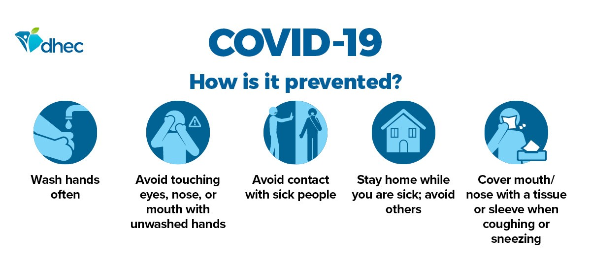

Coronavirus disease (COVID-19)
OVERVIEW
Coronavirus disease (COVID-19) is an infectious disease caused by the SARS-CoV-2 virus.
Most people infected with the virus will experience mild to moderate respiratory illness and recover without requiring special treatment. However, some will become seriously ill and require medical attention. Older people and those with underlying medical conditions like cardiovascular disease, diabetes, chronic respiratory disease, or cancer are more likely to develop serious illness. Anyone can get sick with COVID-19 and become seriously ill or die at any age.
The best way to prevent and slow down transmission is to be well informed about the disease and how the virus spreads. Protect yourself and others from infection by staying at least 1 metre apart from others, wearing a properly fitted mask, and washing your hands or using an alcohol-based rub frequently. Get vaccinated when it’s your turn and follow local guidance.
The virus can spread from an infected person’s mouth or nose in small liquid particles when they cough, sneeze, speak, sing or breathe. These particles range from larger respiratory droplets to smaller aerosols. It is important to practice respiratory etiquette, for example by coughing into a flexed elbow, and to stay home and self-isolate until you recover if you feel unwell.

PREVENTION
To prevent infection and to slow transmission of COVID-19, do the following:
*Get vaccinated when a vaccine is available to you.
*Stay at least 1 metre apart from others, even if they don’t appear to be sick.
*Wear a properly fitted mask when physical distancing is not possible or when in poorly ventilated settings.
*Choose open, well-ventilated spaces over closed ones. Open a window if indoors.
*Wash your hands regularly with soap and water or clean them with alcohol-based hand rub.
*Cover your mouth and nose when coughing or sneezing.
*If you feel unwell, stay home and self-isolate until you recover.